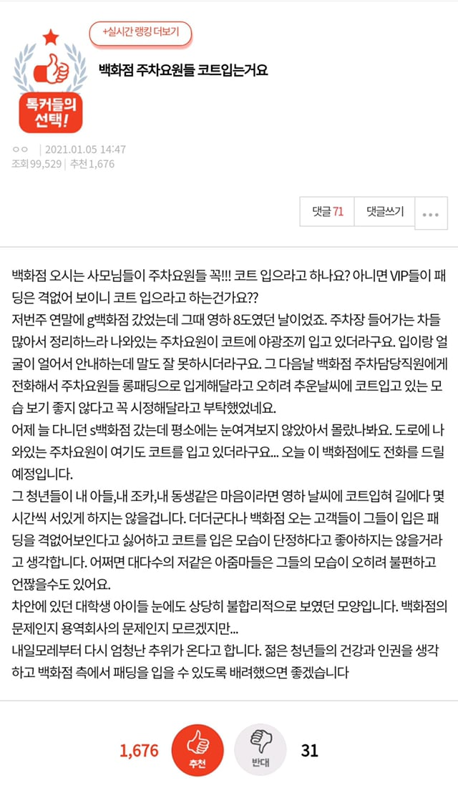
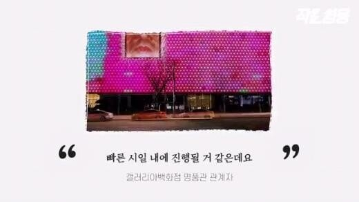
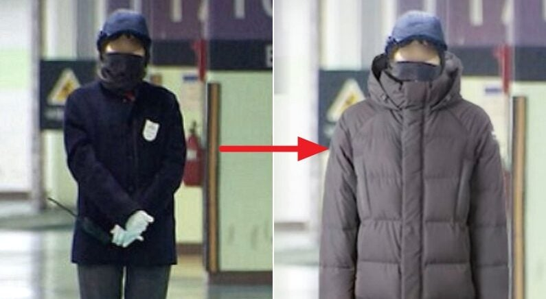

의인



의인
"어른"
예전에 백화점 입점 식당에서 일한적 있는데
식당 직원이랑 같은화장실 쓰는거 싫다는 민원때문에
직원통로에 있는 화장실까지 돌아가서 이용했던 기억이 떠오르는군
마트 계산원들이 서서 일하는 이유가 앉으면 게을러 보인다고 서서일하는거임.
뉴스에서 기자가 초딩한테 인터뷰해도 그렇게 말해서 웃기긴함.
생각을 좀 하자 작은점포도 백화점직원/입점업체직원/알바/보안/환경미화 등등 전부 포함하면 천명넘게일하는데 다같이 고객화장실가면 어떻게되겟냐 으이구
뭔 개소리야 애초에 손님이더많고 거기맞춰서
화장실설계를한건데
대학생때 스타필드 식당 알바하는데 유니폼입고 엘베탔다고 민원 들어온적 있음 ㅋㅋㅋ 지저분하게 유니폼입고 엘베타냐고
직원이 몇명인데 고객엘레베이터 타면 되겟냐 뒤에 후방엘베가 없는것도아니고
틀딱아 그냥 지나가라 냄새나니까
아 자식 같아서 지나칠수 없었다고 ㅋㅋ
자식 같아서 그래요.. 연락 할게요..
에휴
든든한 안주 필요하면 연락해요
술친구필요하면 연락해요.
순서
지킬 것
이상
반대31표 십련들은 뭐냐
그나마 더 따수워보인다 고마운 사람이다
부산롯백도 코트이긴 한데 저거보단 따뜻해보이는거 입고 있었는데 ㅋㅋㅋㅋㅋ
품격은 이런거지 사람먼저
자식같아서의 정말 좋은 예
저기도 대협이 있구나
나도 어릴때 은행 본점 야외 주차장에서 청원경찰 일했었는데
볼펜이 얼어서 한번씩 입김으로 녹여야 써지는데
추워서 손에 입김 부는줄 알고 따뜻한거 엄청 갖다주시더라
저러면 저 근무복은 개인이 돈주고 사는거임? 아님 그냥 주는거임?
보통은 주거나 구입비를 주고 개인이 돈주고 사야하는데 특정 복장을 강요하면 개좆소임
군무원: ???
제공해주고 돌려입음
웨딩홀 주차알바할때 겨울에 롱패딩 빌려줬음
싸구려도 아니고 두툼하고 좋은거 줌
근무복도 거기서 환복했었고 그날 입은 건 업체에 맡겨서 세탁한걸로 암
신세계 기준 임대형태의 구매임 옷가격대 저렴한편이고 나중에 다시 반납가능 근데 장기로다니다보면 구매에 가까워지지 근데 비용은 따로 지원나옴
👏👏
저런 멋진 사람들이 조금씩 행동하고 모여서 세상을 더 따뜻하고 아름답게 바꾸는듯
저게맞지 시발 진짜 개추워
품격있는분이시네
이런게 민원이지
발열조끼인가 그것도 좀 해줘야지 진짜 엄동설한에 밖에 1~2시간 서있는거 진짜 힘든
그러게..저걸 입어도 춥겠구만..
내아들 딸같아서의 좋은 예
ㄹㅇ 저런 민원이 많아야 되는 건데 개쓸데없는 민원들이 태반이라 쯧
10년도 말쯤에 L백화점에서 주차알바 했었는데
우리도 내내 코드 입히다가 어느순간부터 갑자기 롱패딩 주길래 엥? 이 회사가 미쳤나 했는데
누가 컴플레인 걸었대 니들은 백화점 안에서 히터 빵빵하게 틀어놓고 애들은 저 밖에 코트 하나 입혀놓고 세워놨냐고
니들도 나가서 일하라고 누가 개 쎄게 얘기했나봄
고시인성 부착물 추가했으면 더 좋았을텐데

자가보다 진짜빡센건 주차장 카트 모아주는 사람이더라 여름에 덥고 매연 장난아닌데 매년 한두명씩 쓰러짐
잘했으~ 핫팩같은 것도 지원되나. 한겨울 미친 추위에 저기 서있는거 보통 일 아니다...